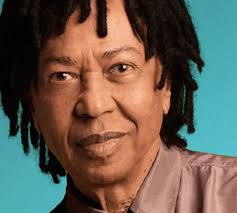
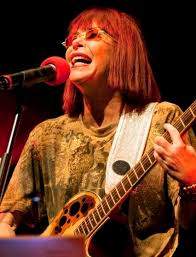

Cantor, compositor e violonista alagoano, Djavan é conhecido por sua habilidade única de
misturar ritmos tradicionais brasileiros com jazz, pop e música africana. Suas letras poéticas
e harmonias ricas e sofisticadas o consagraram como um dos pilares da Música Popular Brasileira.
Com uma voz inconfundível e acordes complexos, ele continua a encantar gerações com canções que
falam sobre amor, natureza e o cotidiano de forma singular.
Dona de uma das vozes mais cristalinas e potentes do Brasil, a baiana Gal Costa foi uma das
figuras centrais do movimento Tropicalista. Ao longo de sua carreira de mais de cinco décadas,
ela transitou magistralmente pelo rock, bossa nova e pop, sempre se reinventando. Gal eternizou
clássicos de grandes compositores e deixou um legado imensurável como uma verdadeira lenda
da música, sendo sinônimo da força e da vanguarda da MPB.
Um dos maiores letristas e compositores da história do país, Chico Buarque atua como um verdadeiro
cronista da alma e da sociedade brasileira. Suas músicas combinam melodias refinadas com letras
que vão desde o lirismo romântico profundo até críticas sociais e políticas afiadas. Ele é um
ícone cultural cuja vasta obra, que se estende da música à literatura e ao teatro, reflete a
identidade e a história do Brasil de maneira genial.

A eterna "Rainha do Rock Brasileiro", Rita Lee foi pioneira, irreverente e revolucionária. Desde
o início de sua carreira com Os Mutantes até seu estrondoso sucesso solo ao lado de Roberto de Carvalho,
ela introduziu humor, ironia e a libertação feminina no pop-rock nacional. Com sua atitude ousada e letras
que quebravam tabus com leveza, Rita construiu uma trilha sonora vibrante que marcou profundamente a
cultura pop do país.
Dono de uma voz de contratenor rara e inconfundível, Ney Matogrosso é um dos artistas mais performáticos
e transgressores da música brasileira. Desde sua estreia explosiva com o grupo Secos & Molhados, ele
quebrou tabus com sua postura andrógina, maquiagens elaboradas e figurinos teatrais em plena ditadura
militar. Sua carreira solo brilhante mistura ousadia visual com interpretações impecáveis, consolidando-o
como um dos maiores, mais magnéticos e reverenciados artistas do país.
| Artista | Gênero | Década de destaque | Música Famosa | Estado de origem |
|---|---|---|---|---|
| Djavan | MPB | 1980 | Oceano | Alagoas |
| Gal Costa | MPB, Tropicália | 1980 | Eternamente | Bahia |
| Chico Buarque | MPB, Samba | 1970 | Cálice | Rio De Janeiro |
| Rita Lee | Rock, Pop | 1970 | Lança Perfume | São Paulo |
| Ney Matogrosso | MPB, Pop | 1980 | Sangue Latino | Mato Grosso do Sul |